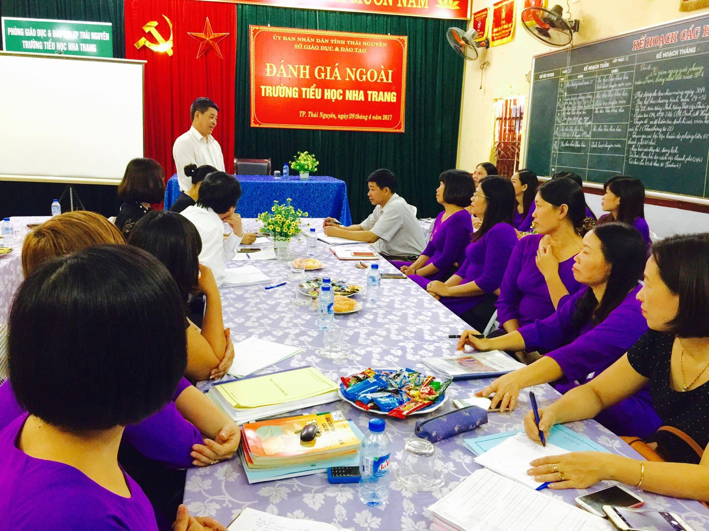
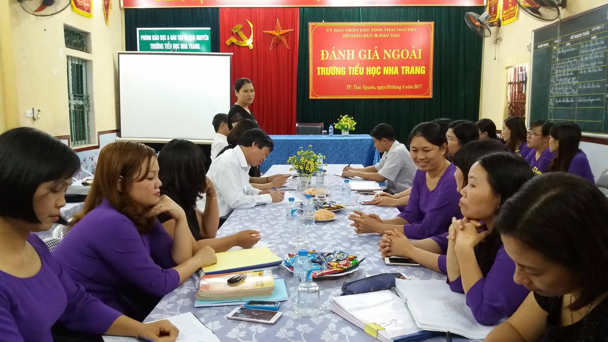
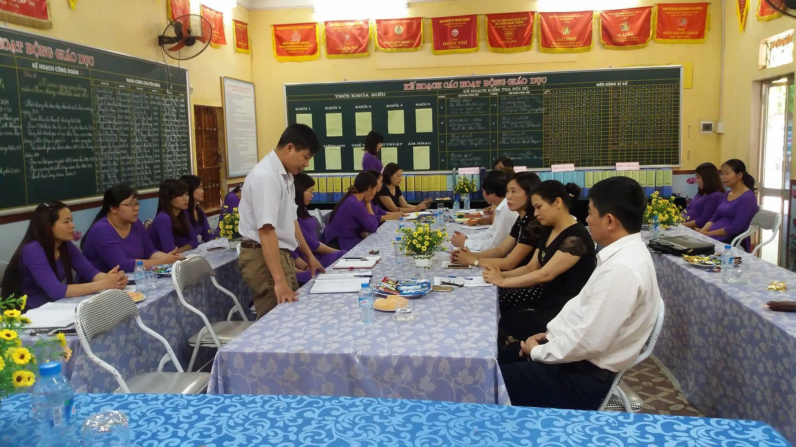
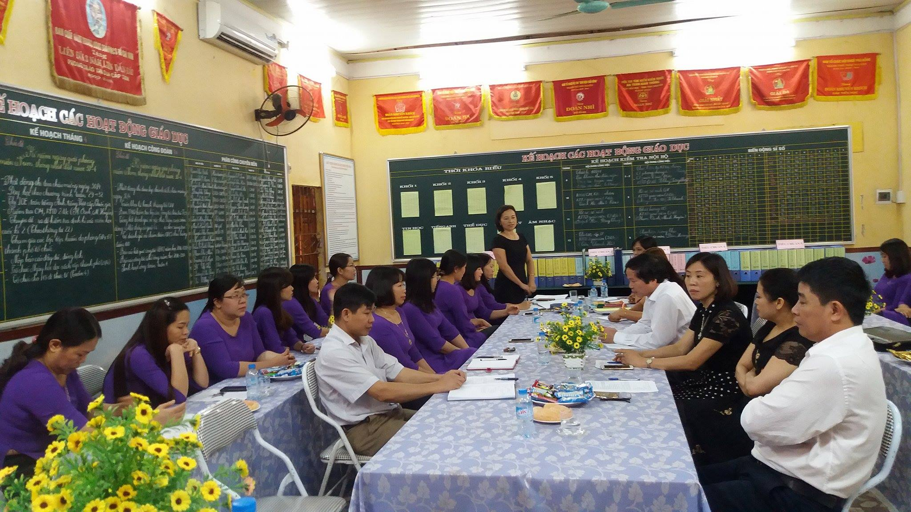
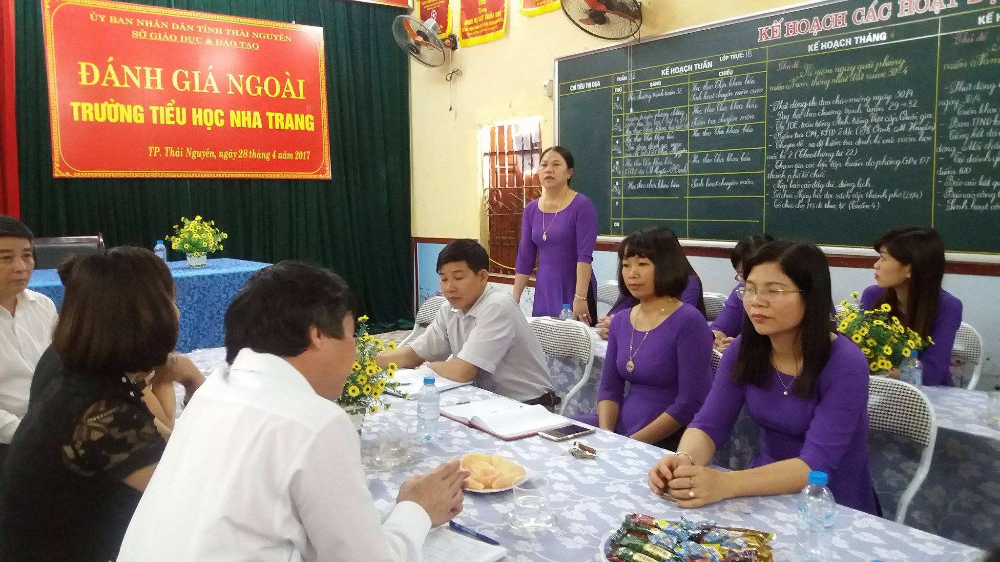
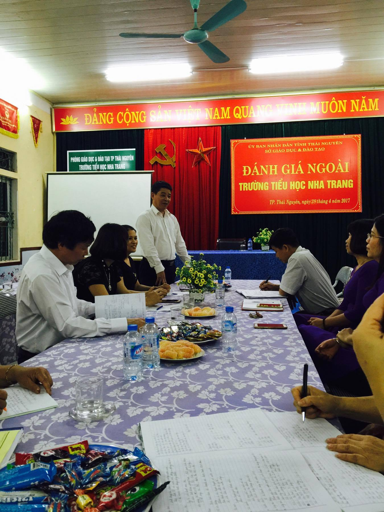
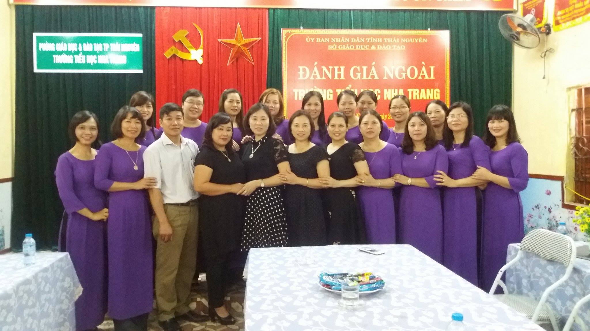

Trường Tiểu học Nha Trang – TP Thái Nguyên đón đoàn đánh giá ngoài KĐCLGD của Sở Giáo dục và Đào tạo tỉnh Thái Nguyên

Thực hiện Quyết định 523/QĐ-SGD&ĐT ngày 13 tháng 4 năm 2017 của Giám đốc Sở Giáo dục và Đào tạo tỉnh Thái Nguyên, được sự chỉ đạo của Sở GD&ĐT tỉnh Thái Nguyên, Phòng GD&ĐT TP Thái Nguyên, từ ngày 25/4 - 28/4/2017 trường Tiểu học Nha Trang vinh dự đón Đoàn Đánh giá ngoài của Sở GD&ĐT.
Đoàn kiểm tra gồm 5 thành viên do đồng chí Đặng Thị Huyền – Hiệu trưởng trường Tiểu học Trung Thành 1 – thị xã Phổ Yên làm trưởng đoàn. Các thành viên là đồng chí Đặng Thị Tám – P. Hiệu trưởng trường Tiểu học Sơn Cẩm 1- Phú Lương –Thái Nguyên; đồng chí Nguyễn Văn Vinh – chuyên viên phòng Khảo thí – KĐCLGD Sở GD&ĐT Thái Nguyên; đồng chí Vũ Thị Thu Hằng – P. Hiệu trưởng trường Tiểu học số 1 Hóa Thượng – Đồng Hỷ; đồng chí Mẫn Thị Yến – chuyên viên Phòng GD&ĐT TP Sông Công.

Đồng chí Đặng Thị Huyền - Trưởng đoàn đánh giá ngoài phát biểu khai mạc
Về phía Phòng GD&ĐT TP Thái Nguyên đến dự và đón đoàn có đ/c Chu Thị Hoa – chuyên viên Phòng GD&ĐT. Về phía địa phương có ông Trần Đình Thìn – Phó chủ tịch UBND phường Phan Đình Phùng. Về phía Ban đại diện CMHS có ông Nguyễn Xuân Học – Trưởng BĐD CMHS nhà trường.

Ông Trần Đình Thìn – Phó chủ tịch UBND phường Phan Đình Phùng phát biểu tại Hội nghị

Đồng chí Chu Thị Hoa - chuyên viên Phòng GD&ĐT TP Thái Nguyên phát biểu tại Hội nghị
Đoàn đã tiến hành khảo sát chính thức, kiểm tra đánh giá công tác Kiểm định chất lượng giáo dục trong nhà trường. Công tác kiểm tra đã diễn ra trên tinh thần nghiêm túc, khẩn trương, trách nhiệm và được thực hiện theo đúng quy định về quy trình chu kỳ kiểm định chất lượng cơ sở giáo dục phổ thông và các công văn hướng dẫn tự đánh giá, đánh giá ngoài cơ sở giáo dục phổ thông của Bộ GD&ĐT.
Thay mặt Hội đồng tự đánh giá đồng chí Phạm Thị Bích - Hiệu trưởng - Chủ tịch Hội đồng tự đánh giá của nhà trường đã báo cáo về quá trình triển khai thực hiện công tác tự đánh giá, nhất là nội dung hoàn thiện Báo cáo tự đánh giá do Đoàn ĐGN của Sở GDĐT góp ý trong phiên khảo sát sơ bộ.

Đ/c Phạm Thị Bích - Hiệu trưởng nhà trường - Chủ tịch Hội đồng tự đánh giá báo cáo quá trình tự đánh giá của nhà trường
Kết quả sau 04 ngày nghiên cứu Báo cáo tự đánh giá hoàn thiện, nhất là tổ chức nhiều nhóm kiểm tra, đối chiếu toàn bộ hồ sơ minh chứng trong bộ chuẩn KĐCLGD trường Tiểu học, kết hợp kiểm tra thực tế tại nhà trường, phỏng vấn cán bộ, giáo viên, nhân viên nhà trường về công tác KĐCLGD, Đoàn ĐGN đã đi đến kết luận:
Kết quả
Tổng số các tiêu chí : 28
Tổng số các tiêu chí Đạt 27/28; Tỷ lệ: 98,8%
Tổng số các tiêu chí Không đạt: 01/28; Tỷ lệ 1,2%
Căn cứ vào Thông tư 42/2012/TT-BGĐT quy định đánh giá chất lượng giáo dục và quy trình KĐCL ngày 23 tháng 11 năm 2012 của Bộ GD & ĐT, đoàn đánh giá kết luận: Trường Tiểu học Nha Trang đạt tiêu chuẩn chất lượng giáo dục cấp độ 3.

Đ/c Lê Quang Trung - Trưởng phòng KTKĐCL Sở GD&ĐT phát biểu chỉ đạo tại Hội nghị
Phát biểu trước Đoàn ĐGN, Phòng GDĐT thành phố, Lãnh đạo địa phương, Ban đại diện cha mẹ học sinh, đồng chí Phạm Thị Bích - Hiệu trưởng - Chủ tịch Hội đồng tự đánh giá trường TH Nha Trang có lời cảm ơn Đoàn ĐGN về kết quả đánh giá và tiếp thu ý kiến chỉ đạo của Đoàn, cùng tập thể hội đồng nhà trường nỗ lực cải tiến chất lượng giáo dục toàn diện để phát triển hơn nữa trường Tiểu học Nha Trang xứng đáng là trường đạt “cấp độ cao nhất của KĐCLGD” của giáo dục Tiểu học thành phố Thái Nguyên.

Đoàn đánh giá ngoài chụp hình lưu niệm với nhà trường